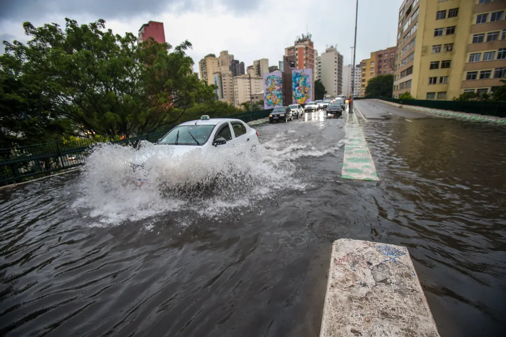
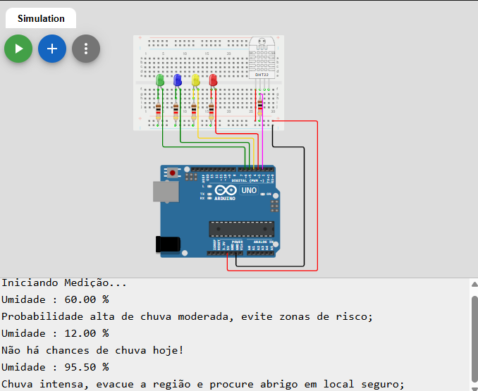
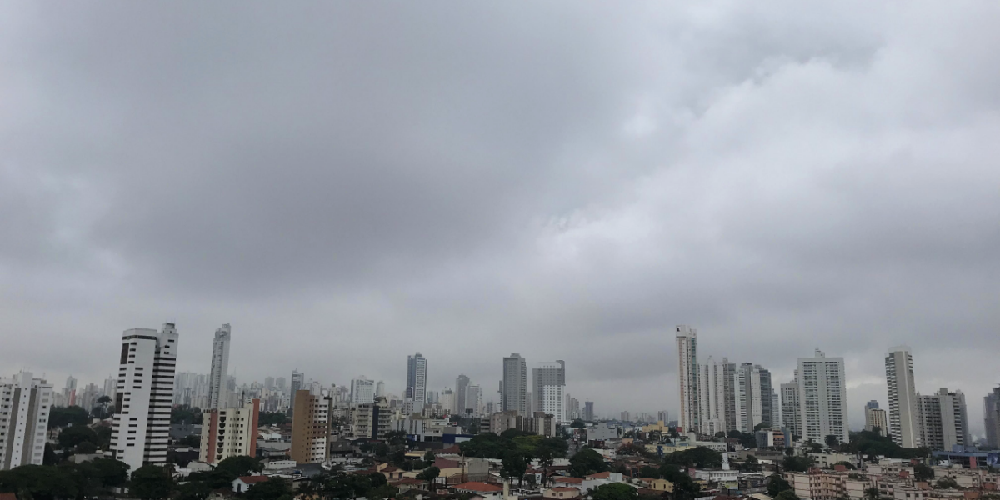
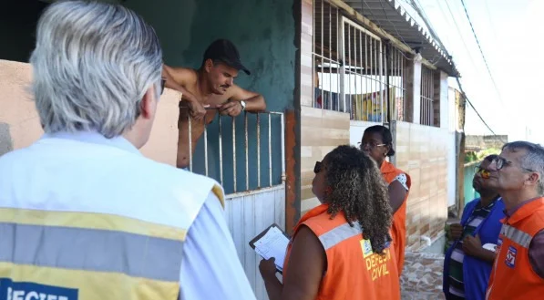
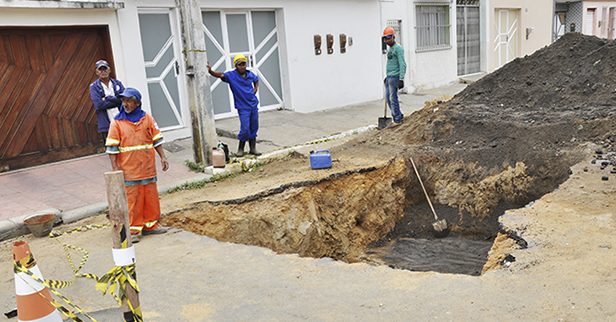
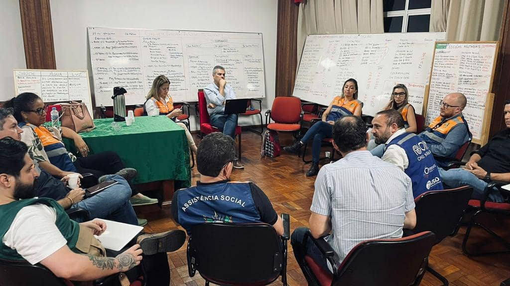

Problema Encontrado
As chuvas em São Paulo causam alagamentos devido ao sistema de drenagem insuficiente. Isso causa risco à segurança dos moradores.
A capital paulista não possui um plano de contigência adequado para lidar com chuvas fortes e ventanias.

Tecnologia disponível
Implementação de sistema com sensores de umidade para prever fortes chuvas a caminho, possibilitando medidas preventivas nas áreas de risco.
Uso de arduíno com sensor DHT22, luzes LEDs para identificação do grau de risco e tela com alerta de emergência.
Voltar ao inicio da Página
Objetivos
Essa medida fará com que a população possa se preparar para as chuvas, evitando alagamentos e danos materiais.
Espera-se, com o tempo, a utilização desta tecnologia para identificar áreas classificadas como arriscadas, visando melhorar a infraestrutura.
Voltar ao inicio da Página
Público-alvo
Moradores da Cidade de São Paulo no geral. As enchentes, além de afetar áreas residencias, impactam na locomoção das pessoas.
Zonas de periferia com alto risco de deslizamentos, bairros com sistema de escoamento ruim e áreas com acumulo de lixo.
Voltar ao inicio da Página
Benefícios do uso do sensor
Possibilidade de planejamento previo às consequências das chuvas e prevenção de vida humana como foco do projeto.
Custo baixo para sua idealização e implementação, e altos benficios para a sociedade, se usado da forma correta.
Voltar ao inicio da Página
Impacto no dia a dia
Essa tecnologia possibilitará que os moradores das regiões mais afetada se sintam mais seguros.
Os planos de evacuação das areas de risco podem ser elaborados de forma mais eficiente e satisfátoria.
Voltar ao inicio da Página